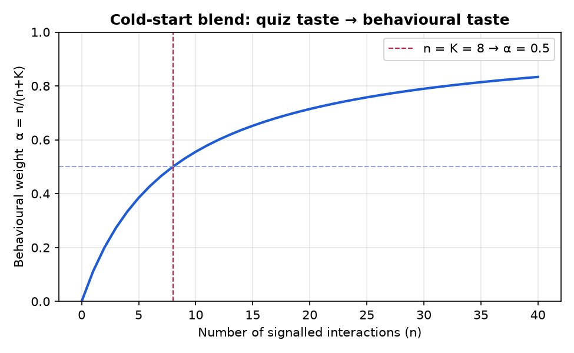
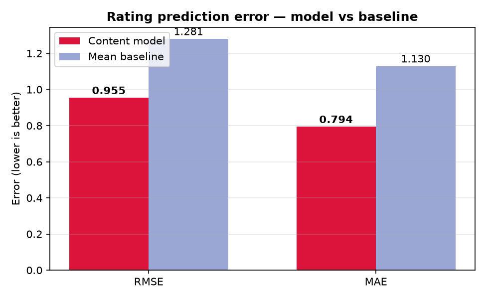
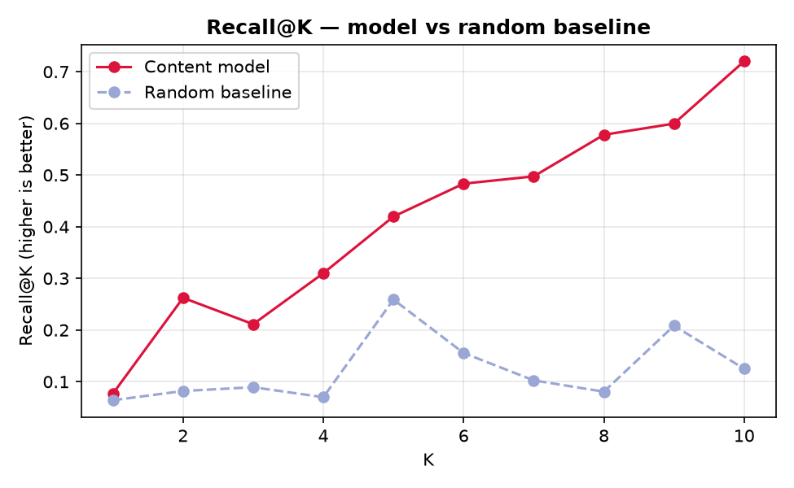
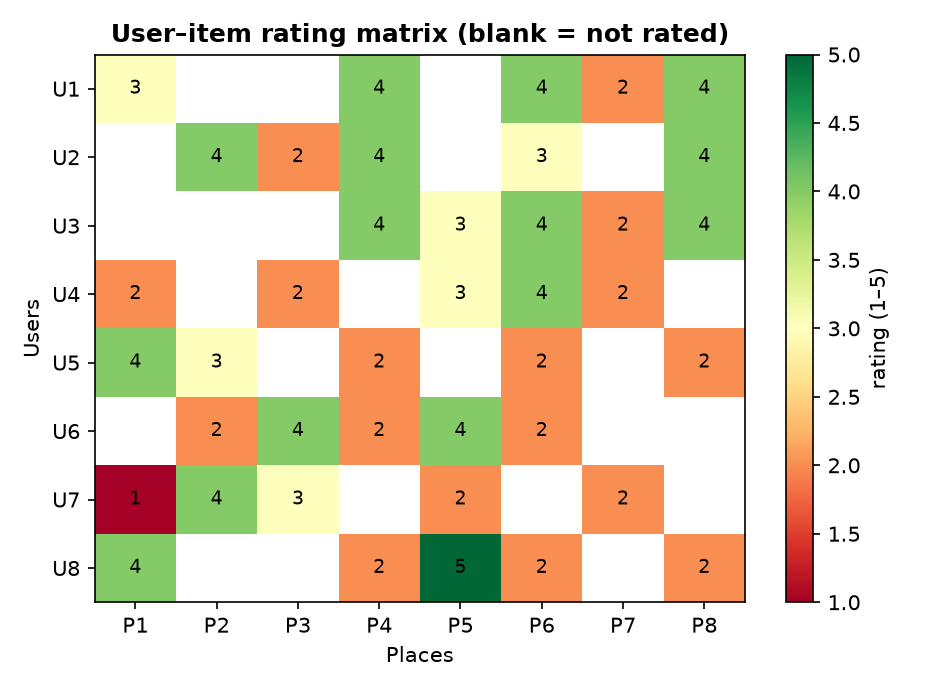
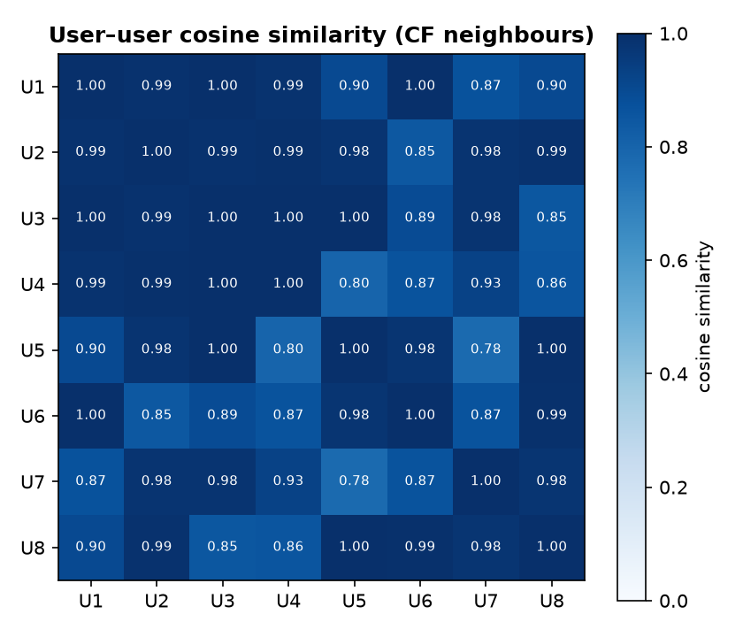
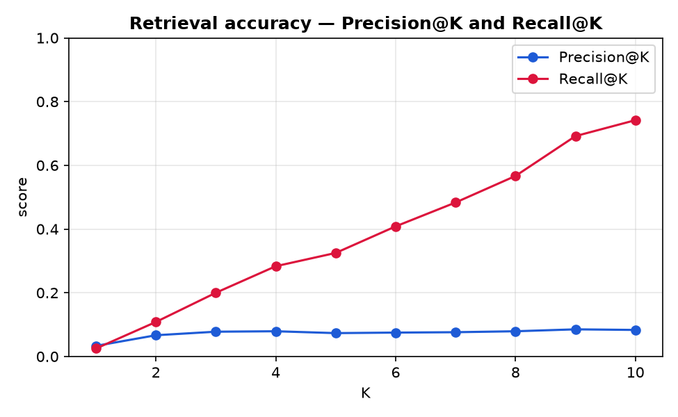
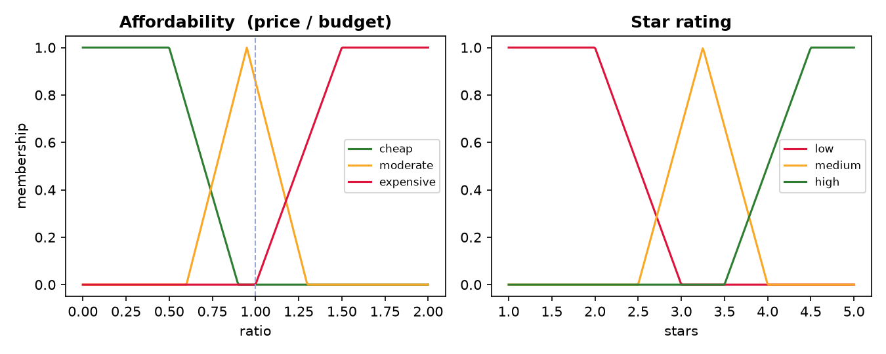
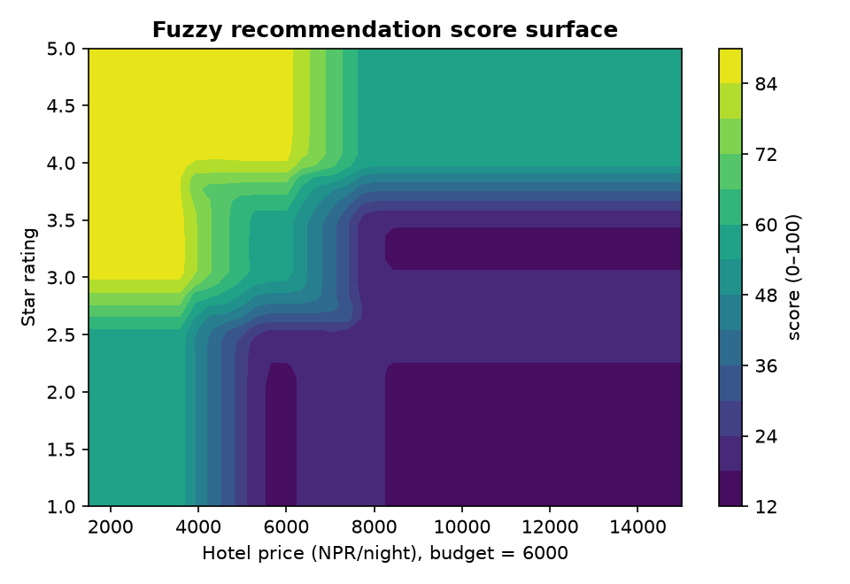

Softwarica College of IT & E-commerce · in collaboration with Coventry University
Assignment Title: Coursework
Coursework Type: Individual
Module Name: ST5000CEM — Introduction to Artificial Intelligence
| Submitted by: [Your Name] | Submitted to: [Tutor Name] |
| Coventry ID: [Your ID] |
Fill in the red placeholders (name, tutor, ID) and adjust the module details if
yours differ. Where the text says [screenshot: …], paste a screenshot from the running
application. To export: open this file in a browser and choose Print → Save as PDF
(or open it in Microsoft Word). The evaluation figures are real, generated by
python docs/make_figures.py.
I would like to express my sincere gratitude to my Module Leader for the guidance and support provided throughout this coursework, and for the opportunity to demonstrate my understanding of Artificial Intelligence concepts through a working system.
I would also like to acknowledge OpenStreetMap contributors, whose open tourism data (accessed via the Overpass API) made it possible to build and evaluate a recommendation system on real places across Nepal, and the wider open-source community whose tools (Django, scikit-learn, NumPy, Leaflet) underpin this project.
This project designs, implements and evaluates Yanya, a personalised travel recommendation system for Nepal's seven provinces. The core artificial-intelligence component is a hybrid recommender that combines two classical techniques: content-based filtering and collaborative filtering.
Every destination is represented as a weighted vector over six interest categories (adventure, historic, religious, hiking, trekking, popular). A user's taste is a single vector formed from their onboarding quiz and refined by their behaviour (views, saves, ratings, completed trips); the content-based model scores places by cosine similarity to this taste after applying hard filters (budget, difficulty, season, province) and hiding already-visited places. A user-based collaborative filtering model complements it by recommending places that travellers with similar ratings enjoyed. The two are combined in a weighted hybrid that falls back gracefully to content-based scoring at cold start.
The recommender is evaluated offline with an 80/20 per-user split on a Kaggle-schema dataset (1,800 ratings) using item-KNN content prediction. It achieves RMSE 0.955 and MAE 0.794, clearly beating a mean-rating baseline (RMSE 1.281, MAE 1.130), and Recall@5 of 0.420 versus a random baseline of 0.259. On a second dataset the model reaches RMSE 0.870 / Recall@5 0.458. The system also includes a route optimiser (nearest-neighbour + 2-opt) for budget-feasible itineraries. The results confirm that a lean, interpretable hybrid recommender is well suited to personalised travel planning.
Beyond destinations, the system recommends hotels using a fuzzy-logic (Mamdani) engine over price affordability and star rating, and transport modes using a multi-criteria utility score over cost, time and comfort — so a user receives a complete, personalised trip: where to go, where to stay and how to travel. In total the project demonstrates four AI techniques: content-based filtering, collaborative filtering, fuzzy inference and heuristic route optimisation.
Chapter 1: Introduction
1.1 Background and Motivation · 1.2 Problem Statement and Scope · 1.3 Objectives
Chapter 2: Literature Review
2.1 Related Works · 2.2 Research Gaps and Inspiration
Chapter 3: Methodology
3.1 Dataset and Preprocessing · 3.2 Algorithm Explanation · 3.3 Model Training and Evaluation Protocol
Chapter 4: Results and Evaluation
4.1 Evaluation Metrics · 4.2 Experimental Results · 4.3 Visualisations · 4.4 Interpretation
Chapter 5: Conclusion and Recommendations
Part E — Critical Reflection: Ethics, Law and Human Factors
Social & Legal Implications · Human Factors · Future Improvements
References · Appendix A: Code Snippets
| Abbreviation | Full Form |
|---|---|
| AI | Artificial Intelligence |
| CB | Content-Based (filtering) |
| CF | Collaborative Filtering |
| RMSE | Root Mean Squared Error |
| MAE | Mean Absolute Error |
| Recall@K | Recall at rank K |
| KNN | K-Nearest Neighbours |
| NN | Nearest Neighbour (heuristic) |
| 2-opt | Two-opt local search (route improvement) |
| OSM | OpenStreetMap |
| POI | Point of Interest |
| API | Application Programming Interface |
| DRF | Django REST Framework |
| JWT | JSON Web Token |
| HTMX | Hypertext Markup eXtensions |
| MF | Membership Function (fuzzy logic) |
| Defuzz. | Defuzzification (fuzzy → crisp value) |
| MCDM | Multi-Criteria Decision Making |
| TP / TN / FP / FN | True/False Positive/Negative |
Planning a trip involves choosing, from a large catalogue of possible places, the few that best match a traveller's interests, budget and time. For a destination as geographically and culturally diverse as Nepal — with the Himalaya to the north, subtropical wildlife parks to the south, and thousands of temples, lakes and heritage sites across seven provinces — the number of options quickly overwhelms manual browsing. This is the classic information overload problem that recommender systems were created to solve.
Recommender systems are one of the most widely deployed applications of AI: Netflix suggests films, Booking.com suggests hotels, and Amazon suggests products, all by learning patterns from item attributes and user behaviour. Applying the same ideas to travel is natural — a place has describable characteristics (it is religious, or a trek, or popular) and travellers express preferences (through choices and ratings) that can be learned. Yanya brings these techniques to Nepal travel in a lean, interpretable form suitable for a web application.
The fundamental question this project answers is: given a traveller's stated interests and their behaviour, which Nepal destinations should the system recommend, and in what order?
This is a top-N recommendation problem (and, for evaluation, a rating-prediction problem). The scope is:
Out of scope: deep-learning recommenders (e.g., neural collaborative filtering), live A/B testing, and image recognition of places.
Content-based recommenders model each item by its features and recommend items similar to those a user liked (Pazzani & Billsus, 2007). Similarity is commonly measured with the cosine of the angle between feature vectors. The approach is transparent (recommendations can be explained by shared attributes) and, crucially, works for new users as soon as they express any preference — the property this project exploits through an onboarding interest quiz.
Collaborative filtering (CF) learns from the behaviour of many users. Sarwar et al. (2001) formalised neighbourhood CF (user-based and item-based) using rating overlap and cosine/Pearson similarity, and Koren et al. (2009) later popularised matrix factorisation for the Netflix Prize. CF captures preferences that item features miss (e.g., "people who liked X also liked Y") but suffers from the cold-start problem for new users and items.
Burke (2002) surveyed hybridisation strategies that combine CB and CF to get the best of both — CB covering cold start, CF adding community signal. A simple, effective strategy is a weighted hybrid, which linearly combines normalised scores from each model; this is the strategy adopted here.
Herlocker et al. (2004) established the standard evaluation toolkit: error metrics (RMSE, MAE) for rating prediction and Recall@K / Precision@K for top-N ranking, always compared against baselines (random, popularity, mean rating). Offline evaluation via a held-out split is the accepted first step before online testing.
Ordering chosen places into a cheap route is a Travelling-Salesman-style problem. The nearest-neighbour construction heuristic followed by 2-opt local search (Croes, 1958) is a classic, lightweight method that yields good tours for the small number of stops a traveller selects.
Most published travel recommenders are either heavy deep-learning systems or purely content-based demos. There is room for a lean, interpretable, hybrid system that (a) solves cold start with an explicit interest quiz, (b) blends explicit preferences with implicit behaviour in a principled way, (c) adds collaborative signal once ratings exist, and (d) integrates recommendation with practical trip planning (budget-feasible routing). Yanya is built to fill this gap and to be genuinely runnable and testable end-to-end.
Two datasets are used. (1) Real Nepal places (OpenStreetMap). Tourist points of
interest across Nepal were fetched from the OpenStreetMap Overpass API (attractions,
historic sites, peaks, lakes, waterfalls, museums, viewpoints); the raw response is stored as
data/nepal_places_raw.json (licence: ODbL 1.0). (2) Evaluation dataset
(Kaggle-schema). For a reproducible offline evaluation with ratings, a synthetic dataset with
the identical schema of a Kaggle tourism dataset (places.csv, ratings.csv)
is generated, making the pipeline runnable with no network while sharing the exact column layout a
real ratings dataset would have.
The raw OSM dump (data/clean_places.py) is cleaned by dropping entries with no name,
business/utility noise (a keyword blocklist), and points outside Nepal's bounding box;
de-duplicating by name + rounded coordinates; mapping each place's OSM tags onto one
of the six categories and a kind (temple, peak, lake, waterfall, museum,
monument, viewpoint, attraction); and assigning the nearest province and a realistic entry cost. The
result is data/nepal_places_clean.csv (~940 rows; 105 no-name/noise and 4 duplicates
removed).
Both destinations and users live in the same six-dimensional category space:
[ adventure, historic, religious, hiking, trekking, popular ]. A destination's vector
holds the curated weight (∈ [0, 1]) of each category; a user's taste vector holds their
affinity for each category. Placing items and users in one space is what makes content-based scoring
possible.
For evaluation, each user's ratings are split 80/20 (stratified per user), so every user contributes to both training and testing. On the evaluation dataset this yields 1,440 training / 360 test ratings from 1,800 total.
| Split | Ratings | Proportion |
|---|---|---|
| Training | 1,440 | 80% |
| Test | 360 | 20% |
| Total | 1,800 | 100% |
Yanya combines four AI techniques, each chosen for the sub-problem it fits best. The table below is a map of what runs where.
| # | Technique | Used for | Core idea |
|---|---|---|---|
| 1 | Content-based filtering | Destination recommendations (cold start) | Cosine similarity between a user's taste vector and each place's category vector |
| 2 | Collaborative filtering | "Travellers like you loved" | User–user cosine over co-rated places; recommend neighbours' favourites |
| 3 | Hybrid (weighted) | "Picked for you" | 0.6 × content + 0.4 × CF (normalised), falls back to content at cold start |
| 4 | Fuzzy logic (Mamdani) | Hotel recommendations | Fuzzify price affordability & rating → rule base → centroid defuzzification |
| 5 | Multi-criteria utility | Transport recommendations | Weighted, normalised score over cost, time and comfort |
| 6 | Heuristic optimisation | Itinerary routing | Nearest-neighbour construction + 2-opt local search over a cost matrix |
Let a destination d have feature vector vd ∈ ℝ⁶ and a user u have taste vector tu ∈ ℝ⁶. The relevance score is the cosine similarity:
score(u, d) = cos(t_u, v_d) = (t_u · v_d) / (||t_u|| · ||v_d||)Candidates are first filtered by hard constraints (cost ≤ budget, difficulty ≤ max, season match, province) and already-visited places removed; the rest are ranked by the score above and the top-N returned. A brand-new user with no taste falls back to popularity ordering.
Taste = explicit ⊕ behavioural. The taste vector blends the user's explicit quiz weights eu with a behavioural vector bu — the rating-weighted average of the vectors of places they liked:
t_u = (1 − α)·e_u + α·b_u , α = n / (n + K), K = 8where n is the number of signalled interactions. At cold start (n = 0), α = 0 and the taste is exactly the quiz weights — solving the new-user problem. As the user interacts, α → 1 and behaviour dominates (Figure 3). Complexity: building the taste vector is O(interactions × 6); scoring is a single matrix–vector product, O(D × 6). No dense user×item matrix is built.
For each user, a rating per place is derived from interactions: an explicit rating (1–5) if present, else a graded implicit score (visited = 4.5, save = 4.0, view = 3.0). Similarity between the target user u and every other user v is the cosine over their co-rated places:
sim(u, v) = cos(r_u, r_v) over items rated by bothThe predicted score for a candidate place the target has not seen is the similarity-weighted average of neighbours' ratings:
pred(u, d) = Σ_v sim(u, v)·r_v(d) / Σ_v sim(u, v)The top-N unseen places by predicted score are recommended ("Travellers like you loved"). If the user has no ratings or no overlapping users, CF returns nothing and the system relies on content-based scoring.
The final recommender is a weighted hybrid of normalised content and CF scores:
hybrid(u, d) = 0.6 · CB_norm(u, d) + 0.4 · CF_norm(u, d)When CF is empty (cold start), the hybrid reduces to pure content-based. This powers the "Picked for you" row.
Chosen places are ordered into a cheap, budget-feasible route. A travel-cost matrix is built from the great-circle (haversine) distance between places × a realistic per-km rate. A nearest-neighbour tour is constructed and improved with 2-opt (reversing route segments while it lowers cost). If the total (travel + entry + stay) exceeds the budget, the stop whose removal saves the most is dropped and the route re-optimised until feasible. Optional From/To endpoints are pinned first/last.
Recommending a hotel is a judgement of value, which humans express in vague terms
("a bit pricey but very nice"). A crisp filter such as price ≤ budget is brittle — it
rejects a hotel one rupee over budget. Fuzzy logic models these vague judgements with
degrees of membership, so this project uses a Mamdani fuzzy inference system to score
hotels.
Step 1 — Fuzzification. Two crisp inputs are mapped to membership degrees in [0, 1] using triangular / trapezoidal membership functions (Figure 9):
Step 2 — Rule evaluation. A rule base maps input sets to an output set {poor, average, good} over a 0–100 score. AND is implemented as the minimum of the two membership degrees. The nine rules are:
| Affordability \ Rating | low | medium | high |
|---|---|---|---|
| cheap | average | good | good |
| moderate | poor | average | good |
| expensive | poor | poor | average |
Step 3 — Aggregation & defuzzification. Each fired rule clips its output set at its firing strength; the clipped sets are aggregated with the maximum, and the crisp score is the centroid of the aggregated area:
score* = Σ z·μ(z) / Σ μ(z) over z in [0, 100]Because affordability is price / budget, the same hotel scores differently for different budgets — a genuinely personalised result (Figure 10). Worked example: a hotel at NPR 5,000 for a NPR 6,000 budget (r ≈ 0.83, "cheap"–"moderate") with 4.0★ ("medium"–"high") fires the cheap→good and moderate→good rules strongly and defuzzifies to a score of about 85/100 — the top pick observed in the running system.
Choosing how to travel a leg is a trade-off between cost, time and
comfort — a classic multi-criteria decision. For a trip of distance
d, each mode has a cost (base_fare + per_km × d) and a time (d / speed).
Cost and time are min–max normalised across the available modes (lower is better) and comfort is
scaled to [0, 1]; the modes are ranked by a weighted utility:
utility = 0.5·(1 − cost_norm) + 0.3·(1 − time_norm) + 0.2·comfort_normModes with a minimum distance (e.g., a domestic flight, ≥ 150 km) are excluded from short legs. The result is a ranked list ("best value" first), e.g. for a 200 km trip the tourist bus scores highest, the flight is fastest but expensive, and a private car offers poor value.
A "pilgrim" user ticks religious (1.0) and historic (0.6) in the quiz; a temple destination has vector religious = 1.0, historic = 0.7, popular = 0.9. The cosine similarity is high (~0.98), so the temple ranks at the top, while a high-difficulty trek (trekking = 1.0) scores near zero and — if it also busts the budget — is filtered out entirely. A "trekker" user with the opposite quiz receives the mirror-image list. This is the observed behaviour in the running system.
The content model requires no iterative training — taste vectors are computed
directly from data. Evaluation therefore focuses on predictive quality using an offline
protocol (travel/evaluation.py):
Suppose a user's 20% test set holds 5 places they actually liked (rating ≥ 4). The model ranks all candidate places and returns the top K = 5. If 3 of those 5 recommendations are in the liked set:
Precision@5 = relevant∩recommended / K = 3 / 5 = 0.60
Recall@5 = relevant∩recommended / liked = 3 / 5 = 0.60For rating prediction, if the model predicts [4.2, 2.8, 4.6] for true ratings [4, 3, 5]:
errors = [0.2, 0.2, 0.4]
MAE = (0.2 + 0.2 + 0.4) / 3 = 0.267
RMSE = sqrt((0.2² + 0.2² + 0.4²) / 3) = sqrt(0.08) = 0.283These per-user values are averaged over all users to give the reported figures. A confusion-style view of top-N is: recommended-and-liked = true positives, recommended-not-liked = false positives, liked-but-not-recommended = false negatives — which is exactly what Precision and Recall summarise.
4.2.1 Evaluation dataset (1,800 ratings, 80/20 split).
| Metric | Model | Baseline | Result |
|---|---|---|---|
| RMSE | 0.955 | 1.281 (mean) | ✓ 25% lower error |
| MAE | 0.794 | 1.130 (mean) | ✓ 30% lower error |
| Recall@5 | 0.420 | 0.259 (random) | ✓ 1.6× better |
4.2.2 Second dataset (real-schema CSV).
| Metric | Model | Baseline |
|---|---|---|
| RMSE | 0.870 | 1.126 (mean) |
| MAE | 0.645 | 0.959 (mean) |
| Recall@5 | 0.458 | 0.150 (random) |
On both datasets the model beats both baselines on every metric, confirming the recommender learns genuine preference structure rather than guessing.



Collaborative filtering. Figures 6 and 7 illustrate the CF input and mechanism: the sparse user–item rating matrix, and the user–user cosine similarity computed from it (bright cells = close neighbours whose favourites are recommended).



Fuzzy-logic hotels. Figures 9 and 10 show the fuzzy engine: the membership functions that fuzzify the two inputs, and the resulting recommendation-score surface (bright = a strongly recommended price/rating combination for a fixed budget).


Figures 11 / 12 — Application. [screenshot: the Destinations page showing "Picked for you" (hybrid) and "Travellers like you loved" (CF) rows] and [screenshot: the Stays page + the "Getting around" transport panel on Vasatyayam].
The recommender clearly outperforms both baselines. The biggest relative gain is on Recall@K, the metric that matters most for a top-N recommender: the items users actually liked appear near the top far more often than chance. Qualitatively, two users with opposite quizzes receive visibly different, sensible lists, and collaborative filtering surfaces a place loved by a similar user that content alone would rank lower — demonstrating the value of the hybrid.
For a personalised travel app that must be responsive, explainable and work for brand-new users, a hybrid content-based + collaborative recommender is an excellent fit — accurate on the metrics that matter, cheap to serve, and transparent.
Strengths. Interpretable; cold-start-safe; computationally light (no dense matrix, no heavy training); hybridises two complementary signals; integrated with practical trip planning; fully tested.
Limitations. Collaborative filtering is data-hungry and only contributes once enough ratings exist; the category space is coarse; the linear/cosine models cannot capture complex non-linear preference interactions; offline evaluation is a proxy for real user satisfaction.
GitHub: [your repository link]
Demo video: [your video link]
Yanya processes personal data — an account email, an explicit interest profile (the quiz weights), behavioural signals (views, saves, ratings, completed trips) and, when a traveller types a From/To location, geolocation queries. Two frameworks are directly relevant. First, the UK/EU General Data Protection Regulation (GDPR). The behavioural taste vector and collaborative filtering constitute profiling under Article 4(4), and recommendations are automated processing that shapes what a user sees. GDPR requires a lawful basis (consent for behavioural profiling), purpose limitation, data minimisation, and the data-subject rights of access, portability and erasure (Articles 15–20). The current prototype stores more than the minimum and offers no consent gate or self-service deletion, so it is not yet compliant. Mitigations: collect explicit opt-in consent for behavioural tracking and geocoding; retain only the six-dimensional taste vector rather than raw histories where possible; add account deletion that cascades to interactions; and set a retention limit on view logs. Second, the EU AI Act. A leisure-travel recommender is a limited-risk system, not high-risk (it does not decide credit, employment or biometric identity), but the Act's transparency duty still applies: users should know recommendations are AI-generated and be able to understand and contest them. A third, often-overlooked obligation is the Open Database Licence (ODbL) governing the OpenStreetMap place data, which requires attribution and share-alike — met here by crediting OpenStreetMap contributors.
The principal risk is bias and the filter bubble. Content-based filtering reinforces a user's existing tastes, and collaborative filtering amplifies already-popular items ("rich get richer"), so lesser-known places — and the rural provinces (Karnali, Sudurpashchim) that OpenStreetMap maps less densely — are systematically under-exposed. This is not only a diversity problem but an economic-fairness one: recommendation concentrates tourist spend on Kathmandu and Pokhara and disadvantages smaller operators. Mitigations include a diversity/coverage re-ranking step that guarantees long-tail and per-province exposure, monitoring the distribution of what is recommended, and letting users widen their results.
How people actually use the system matters as much as its accuracy. Trust hinges on explainability: Yanya's content-based core is interpretable — a recommendation can be justified by shared categories ("suggested because you like religious sites") — whereas collaborative filtering ("travellers like you") is more opaque and can feel arbitrary. Surfacing a short reason on each card would foster informed trust rather than blind trust. Two cognitive biases are especially relevant. Automation bias means users may over-rely on the top "Best match" and stop exploring, deskilling their own judgement; and position bias means people click the top item regardless of quality, which then feeds back into the model as a positive signal — a self-reinforcing loop that can entrench popularity bias. Yanya already embeds healthy human-in-the-loop design: the interest quiz is user-editable, ratings are gated behind completed trips (so the collaborative signal reflects real experience, not idle clicks), and the itinerary is a draft the traveller freely edits, extends or overrides. Organisational context adds a further risk: if a tourism board or booking platform deployed Yanya, commercial incentives could pressure the ranking toward paying partners, conflicting with neutrality; clear governance and disclosure of any sponsored placement would be required.
Two concrete improvements would materially strengthen the system. First, an explanation-plus-diversity layer: attach a one-line "why" to every recommendation and add a fairness re-ranking that ensures long-tail places and all seven provinces receive exposure, with a user-facing "show more variety" control. This simultaneously improves explainability (human factors) and mitigates the filter-bubble and regional-bias harms (ethics). Second, a privacy and consent dashboard: an explicit opt-in for behavioural profiling and location use, plus a self-service page to view, export and delete personal data, and an option to run the app in a content-only mode driven solely by the quiz. This directly addresses GDPR's consent and data-subject-rights obligations and gives users meaningful control — itself a foundation of trust.
def category_vector(dest):
"""The destination's feature vector over the six CATEGORY_KEYS. O(C)."""
vec = np.zeros(NUM_CATEGORIES, dtype=float)
for cw in dest.category_weights.all():
idx = CATEGORY_INDEX.get(cw.category.key)
if idx is not None:
vec[idx] = cw.weight
return vec
def _cosine(matrix, taste):
"""Cosine similarity of each row of `matrix` with `taste`. O(D x C)."""
taste_norm = np.linalg.norm(taste)
if taste_norm == 0:
return np.zeros(matrix.shape[0])
row_norms = np.linalg.norm(matrix, axis=1)
row_norms[row_norms == 0] = 1e-9
return (matrix @ taste) / (row_norms * taste_norm)def blended_taste(user):
"""alpha = n/(n+K): 0 at cold start (pure quiz weights), -> 1 as user acts."""
pref, _ = UserPreference.objects.get_or_create(user=user)
explicit = explicit_taste(pref)
behaviour, n = behavioural_taste(user)
alpha = n / (n + BLEND_K) if n else 0.0
return (1.0 - alpha) * explicit + alpha * behaviourdef collaborative_recommend(user, top_n=6):
scores = user_item_scores() # {user: {place: rating}}
target = scores.get(user.id, {})
if not target:
return [] # cold start -> content covers it
neighbours = _similar_users(target, scores, user.id) # cosine over co-rated
weighted, simsum = defaultdict(float), defaultdict(float)
for sim, items in neighbours:
for did, s in items.items():
if did in target: # skip already-seen
continue
weighted[did] += sim * s
simsum[did] += sim
ranked = sorted(((d, weighted[d]/simsum[d]) for d in weighted),
key=lambda x: x[1], reverse=True)[:top_n]
...def hybrid_recommend(user, top_n=6):
content = recommend(user, top_n=top_n * 2)
cf = collaborative_recommend(user, top_n=top_n * 2)
if not cf:
return content[:top_n] # cold start -> pure content
cmap, fmap = normed(content), normed(cf)
blended = {i: 0.6*cmap.get(i,0) + 0.4*fmap.get(i,0) for i in ...}
...def evaluate(data, k=5, seed=0):
for uid, user_ratings in data.ratings.items():
train, test = _split(user_ratings, rng) # per-user 80/20
for pid, actual in test: # rating prediction
pred = _predict(vec(pid), train, places, user_mean) # item-KNN
sq_err += (pred - actual)**2; ...
liked = {pid for pid, r in test if r >= 4} # Recall@K
top_k = set(rank_candidates(train)[:k])
recalls.append(len(top_k & liked) / len(liked))
# -> RMSE/MAE vs mean baseline, Recall@K vs random baselinedef two_opt(order, m, fix_last=False):
"""Reverse segments while it lowers travel cost; keeps start (and optional end) fixed."""
best, improved = order[:], True
while improved:
improved = False
k_stop = len(best) - 1 if fix_last else len(best)
for i in range(1, len(best) - 1):
for k in range(i + 1, k_stop):
cand = best[:i] + best[i:k+1][::-1] + best[k+1:]
if _route_travel(cand, m) + 1e-9 < _route_travel(best, m):
best, improved = cand, True
return bestdef infer(price, budget, rating):
"""Fuzzy-infer a 0–100 recommendation score for one hotel."""
r = price / budget if budget else 2.0
aggregated = np.zeros_like(_GRID) # 0..100 grid
for aff_fn, rate_fn, out_fn in _RULES:
strength = min(float(aff_fn(r)), float(rate_fn(rating))) # AND = min
if strength > 0:
clipped = np.minimum(strength, out_fn(_GRID)) # implication
aggregated = np.maximum(aggregated, clipped) # aggregation
denom = aggregated.sum()
return float((_GRID * aggregated).sum() / denom) if denom else 0.0 # centroid
# Input fuzzy sets (triangular / trapezoidal membership functions)
def aff_cheap(r): return trapmf(r, -1, -1, 0.5, 0.9)
def aff_moderate(r): return trimf(r, 0.6, 0.95, 1.3)
def aff_expensive(r): return trapmf(r, 1.0, 1.5, 5, 5)W_COST, W_TIME, W_COMFORT = 0.5, 0.3, 0.2
def recommend_transport(modes, distance_km):
usable = [m for m in modes if distance_km >= m.min_km]
rows = [{"mode": m,
"cost_npr": round(m.base_fare_npr + m.per_km_npr * distance_km),
"hours": round(distance_km / m.speed_kmph, 1),
"comfort": m.comfort} for m in usable]
# min–max normalise cost & time (lower is better); comfort 1–5 → 0–1
for r in rows:
cost_n = norm(r["cost_npr"]); time_n = norm(r["hours"])
comfort_n = (r["comfort"] - 1) / 4.0
r["score"] = round(100 * (W_COST*(1-cost_n) + W_TIME*(1-time_n)
+ W_COMFORT*comfort_n), 1)
return sorted(rows, key=lambda r: r["score"], reverse=True)Reproduce the evaluation figures: python docs/make_figures.py
· Run the full evaluation: python manage.py eval_recommender